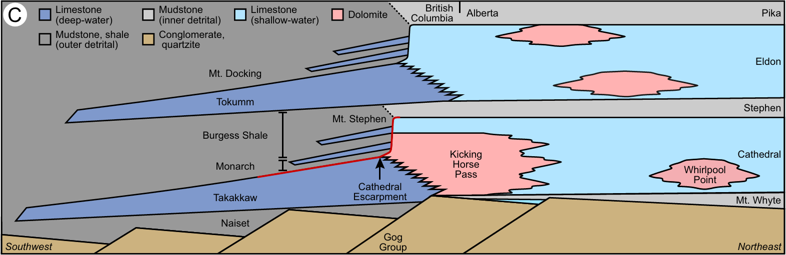
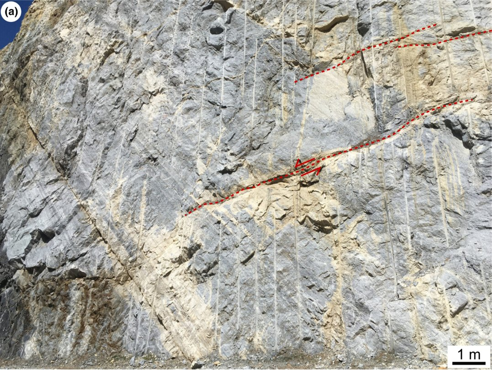
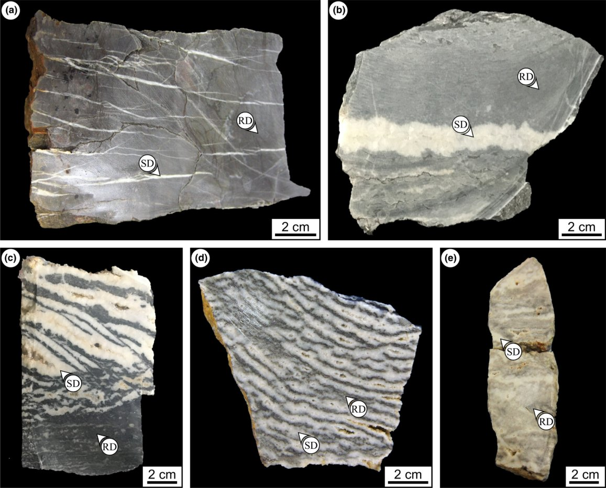
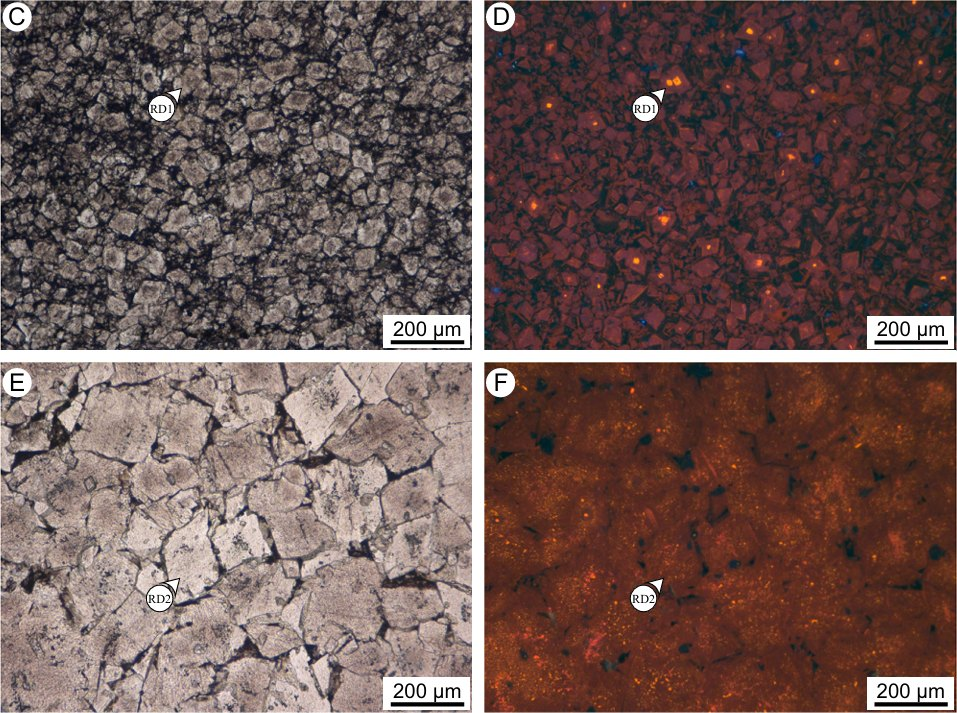
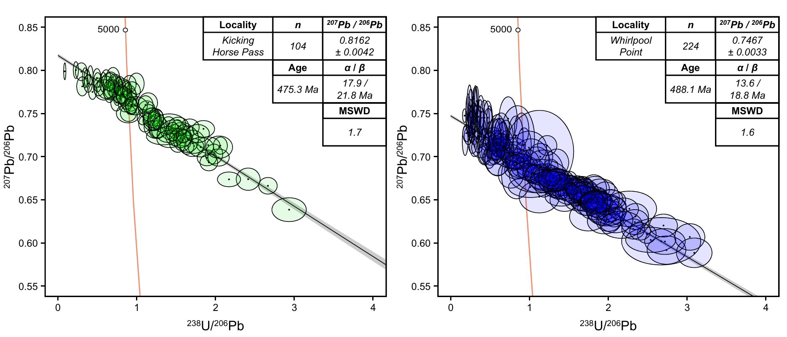
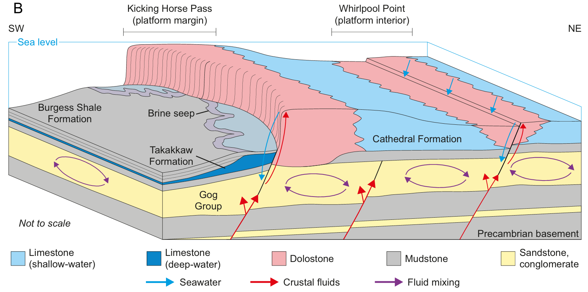

Structurally-Controlled Hydrothermal Dolomitization
Understanding how faults/fractures govern hydrothermal dolomitization in burial diagenetic settings, from fluid flow and water-rock reactions to the distribution and timing of dolomite formation.
Overview
My Ph.D. research (The University of Manchester, with Cathy Hollis and Ernest Rutter) focused on fault-controlled hydrothermal dolomite bodies hosted in Middle Cambrian strata of the southern Rocky Mountains, western Canada. These dolomite bodies form where hot, mineral-rich fluids exploit deep fault systems, dissolving and replacing the surrounding limestone and precipitating the distinctive banded “zebra texture” that makes them so recognizable in outcrop and hand-specimen. Rather than studying this system with a single method, I built a four-part, complementary research program that moves from descriptions to mechanisms to timing:
- Imaging: Shortwave infrared hyperspectral imaging of outcrops to rapidly and non-destructively map multi-phase dolomitization, revealing textural and compositional zoning that was invisible to the naked eye.
- Mapping: Basin-scale structural-sedimentological analysis showing how the intensity and style of zebra-textures vary systematically with proximity to the controlling fault systems.
- Timing: Direct U–Pb geochronology of dolomite, showing that this hydrothermal fluid flow was coeval with deposition of the world-famous Burgess Shale lagerstätte, raising the possibility that hydrothermal brine seeps helped support the Cambrian ecosystems nearby.
- Mechanism: Detailed petrographical and geochemical work resolving the coupled replacement–deformation–cementation processes that build zebra textures band by band.
This research has been recognized with the Harold Reading Medal (British Sedimentological Research Group; Outstanding publication by a graduate student) and the Ramsey Medal (Tectonic Studies Group; Outstanding publication in structural geology & tectonics).
Key Figures





